Each mottled ground paired with its matching hero grade, blended at book-cover proportions (900×1368, 2:3) and written to assets/cover-blends/. The mottle is the cover material; the graded landscape sits inside it at 62% with the texture brought back over the top, so the photo reads as printed stock rather than a pasted-in picture. Ready for a title lockup.
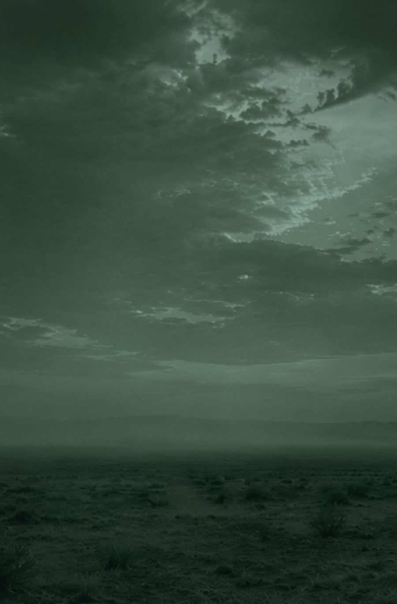
01 — Dusk / DuskThe house look; matches the reference cover
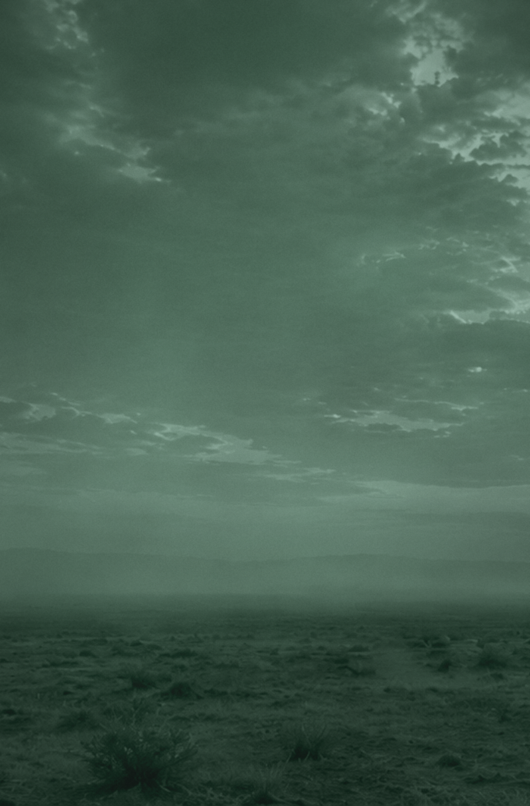
02 — Moss / MossLighter, more open green
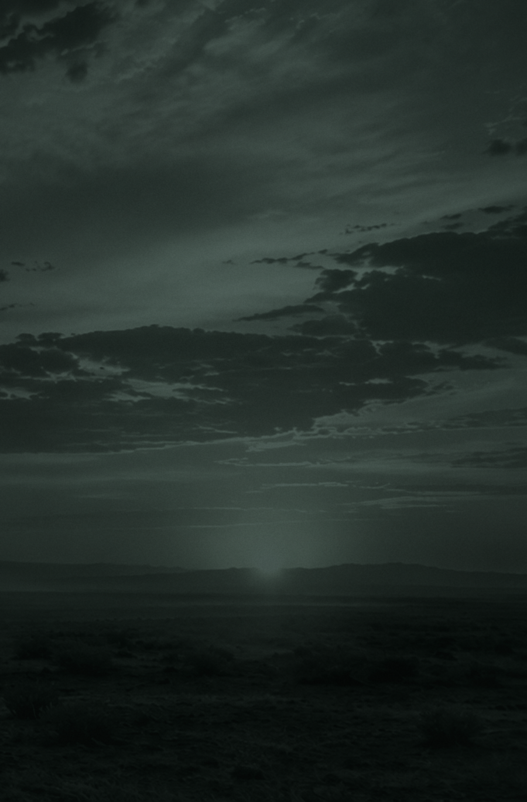
03 — Ink deep / InkSun kept; darkest of the greens
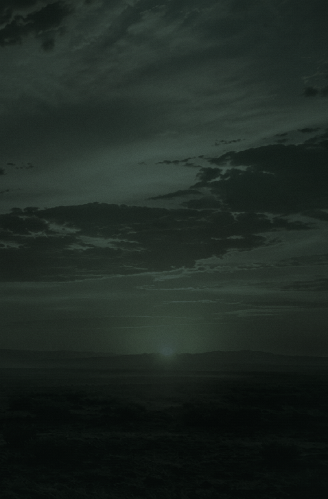
04 — Night / Deep pineNear-night; heaviest scrim
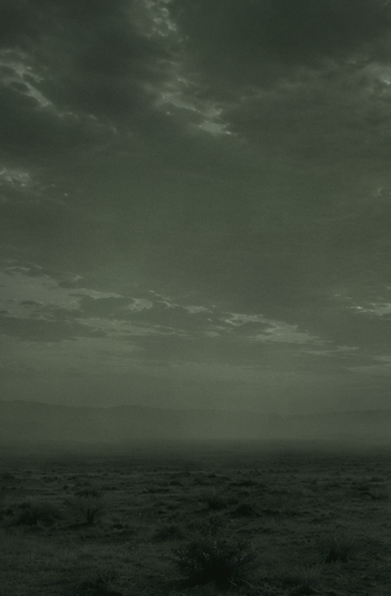
05 — Twilight / OliveCool cast; reads as dusk
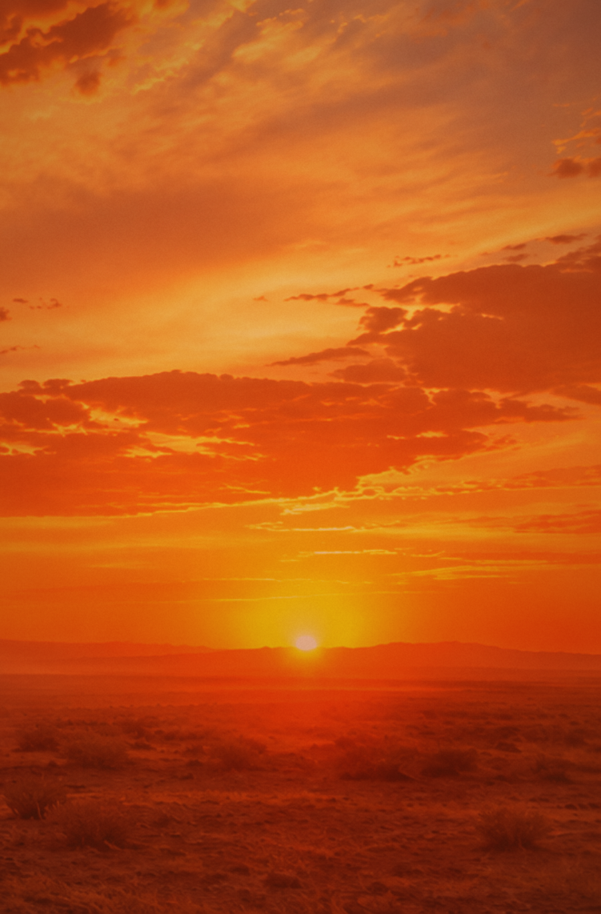
06 — Rust / RustWarm; closest to the original photo
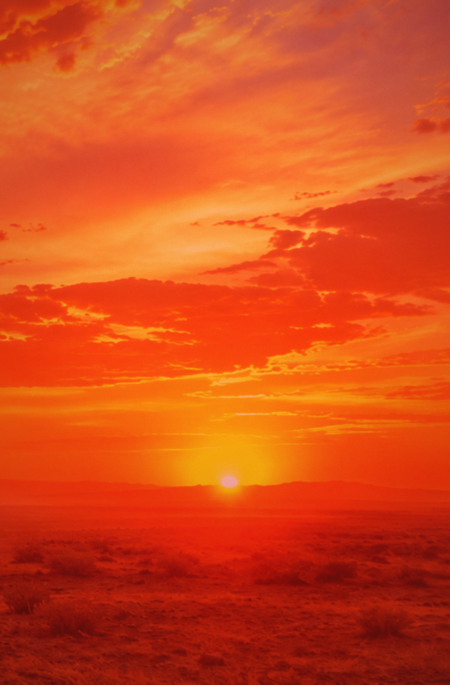
07 — Ember / EmberHottest; brand red forward
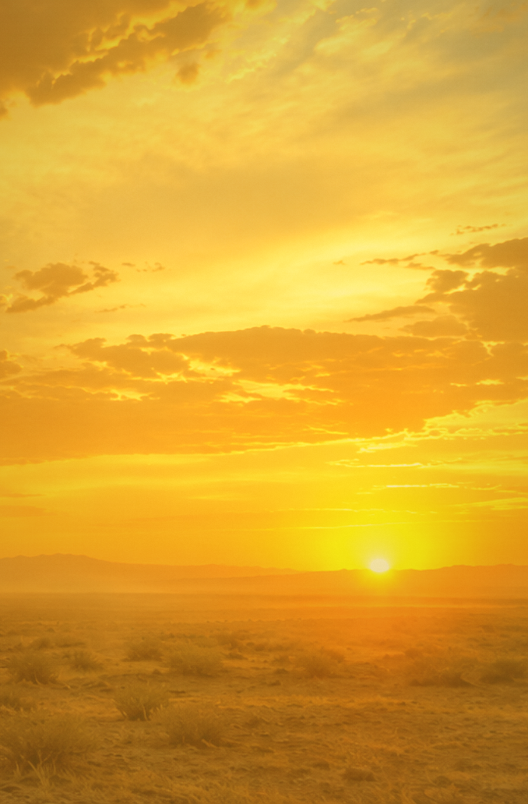
08 — Gold / GoldBright; needs dark type
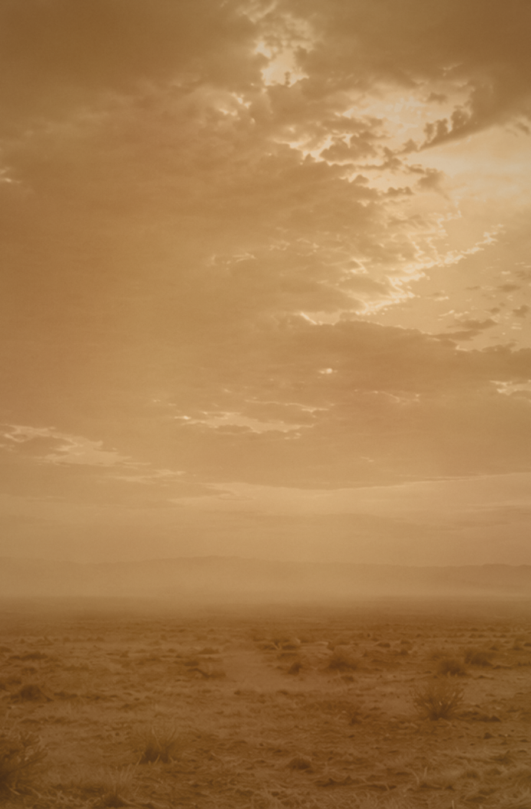
09 — Sepia / DustArchival, muted
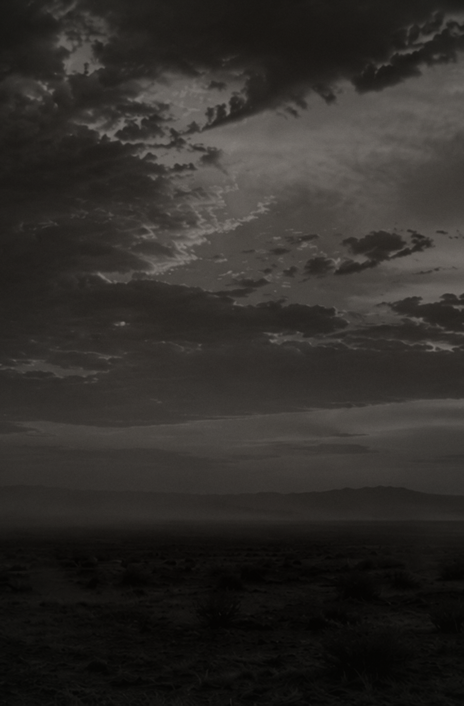
10 — Mono / Ink brownBlack & white over warm ground
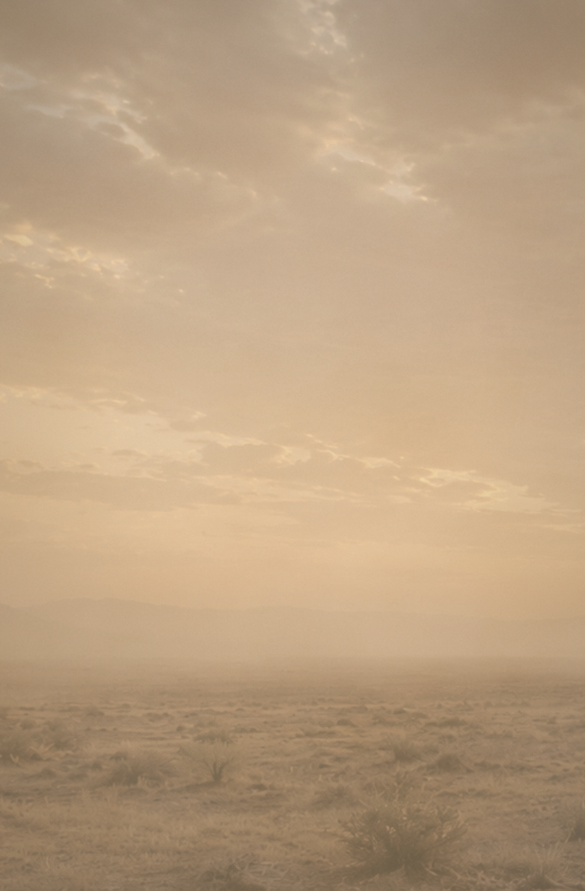
11 — Faded / HazeWashed; "clings to the dust"
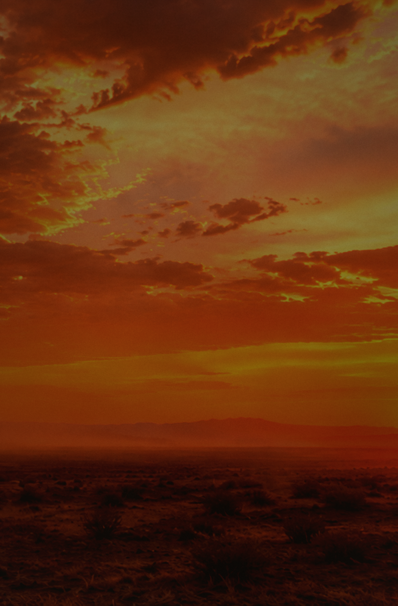
12 — Drama / UmberHardest contrast; strongest clouds
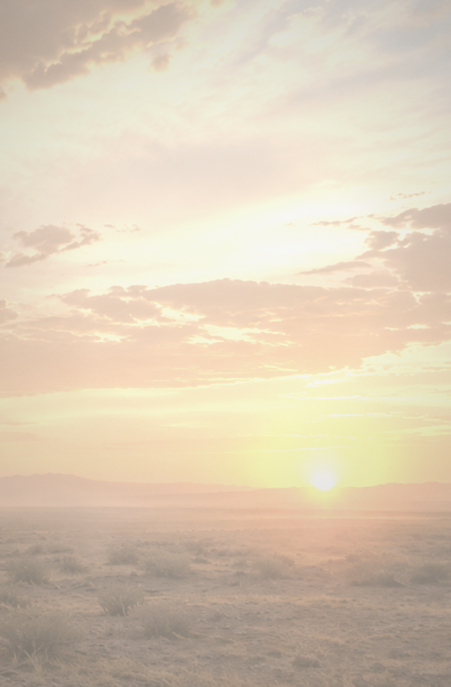
13 — Dawn / ParchmentLightest; dark type only
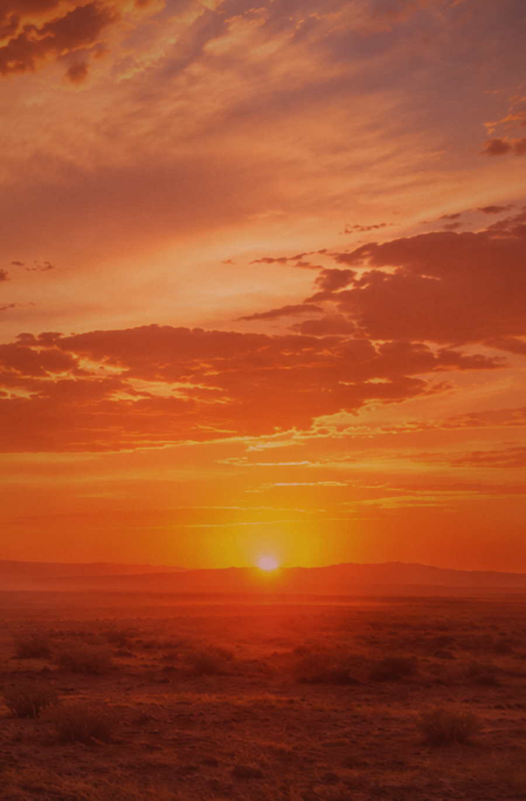
14 — Original / OxbloodFull-colour sunset, deepened
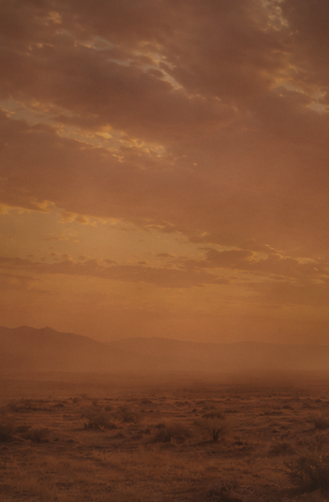
15 — Dust storm / Dusk brownGrained; most textural